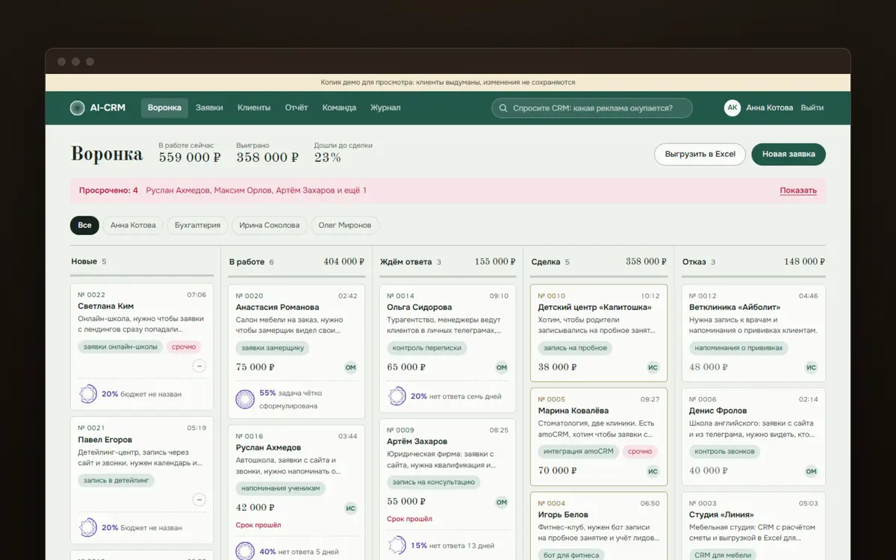
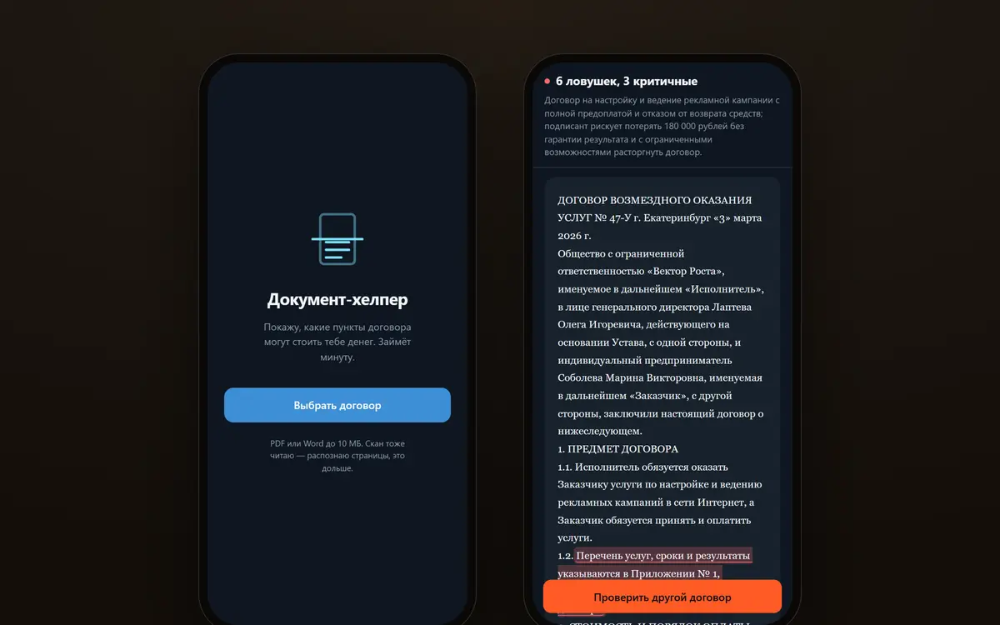
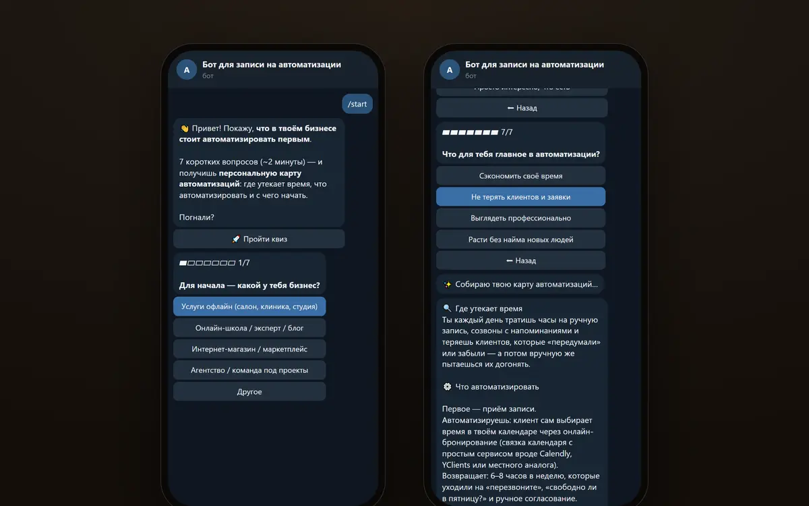
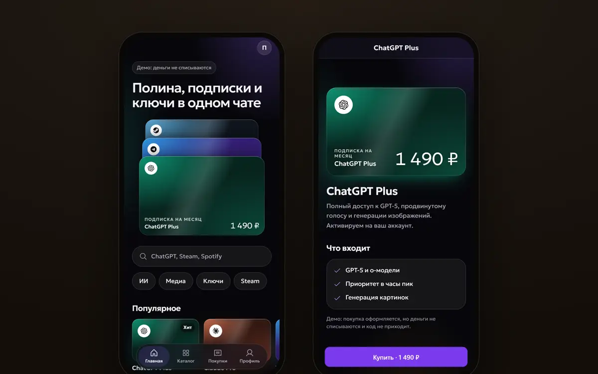
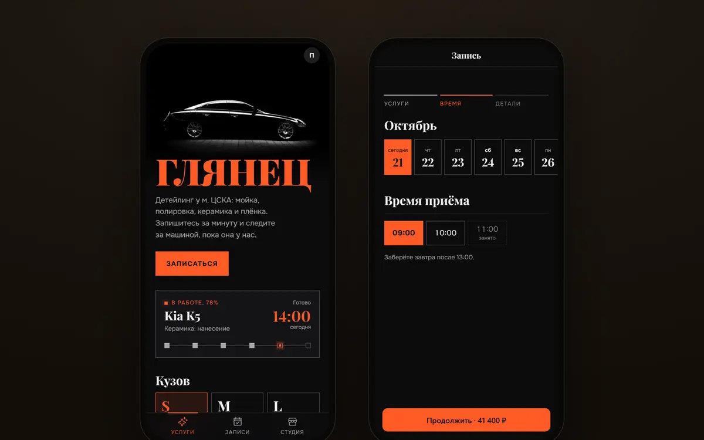
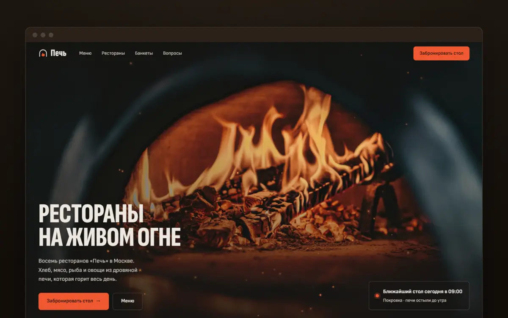
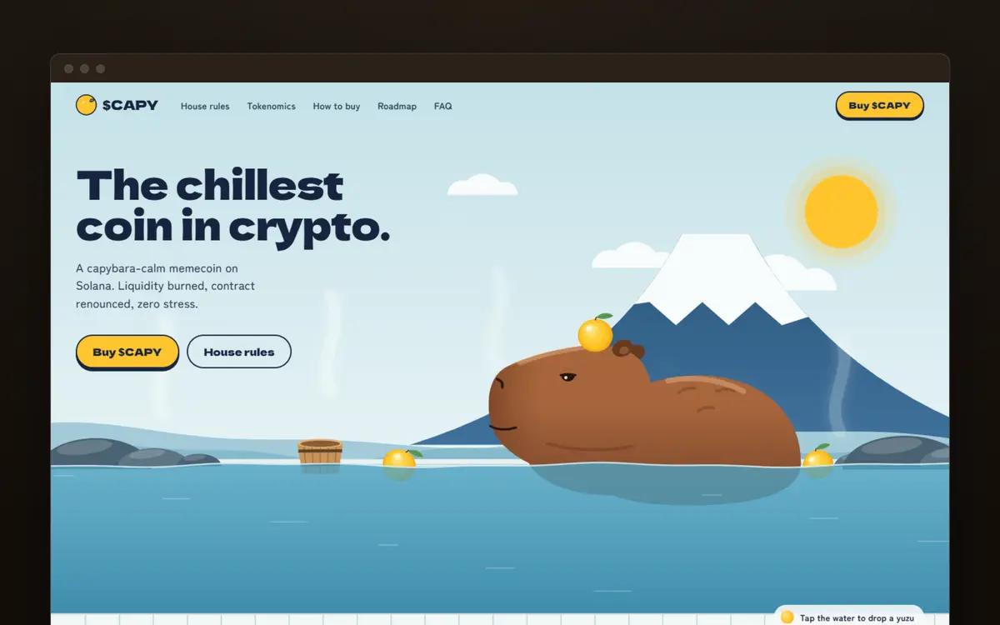

Работы
7 проектов
- 1
AI-CRM
CRM с ИИ-разметкой заявок
- Задача
- Заявки рассыпаны по директу, почте и форме на сайте. Пока до них дойдут руками, клиент уходит к тому, кто ответил первым.
- Решение
- Все заявки попадают в одну воронку. Модель подписывает тему, срочность и черновик ответа, уведомление приходит в Telegram и MAX. Роли, напоминания и журнал действий.
- Важно
- Требования собраны из 36 реальных ТЗ на CRM с бирж. 214 тестов.
Python · FastAPI · SQLAlchemy · Postgres · OpenRouter · aiogram · Docker

- 2
Документ-хелпер
Разбор договоров в Telegram
- Задача
- Договор подписывают все, а читают до конца единицы. Плохой пункт замечают, когда деньги уже сгорели. Юрист берёт от 3 000 ₽ и отвечает за день-два.
- Решение
- Бросаешь PDF или Word в мини-апп. Опасные пункты подсвечиваются в тексте, рядом перевод на человеческий и безопасная редакция, на выходе протокол разногласий в Word.
Python · aiogram · Pydantic · pdfplumber · OpenRouter · Docker

- 3
Квиз-бот
Карта автоматизаций для бизнеса
- Задача
- Владелец тонет в рутине и не знает, что автоматизировать первым. Типовые советы не учитывают его нишу и размер команды.
- Решение
- Семь вопросов в Telegram или MAX, и модель собирает персональную карту автоматизаций. Лид с ответами сразу уходит менеджеру, есть выгрузка в Excel и CRM.
TypeScript · Cloudflare Workers · D1 · Workflows · Python · MAX Bot API · OpenRouter

- 4
Nebula
Магазин в Telegram
- Задача
- Продавать цифровые товары, не уводя покупателя из Telegram в браузер.
- Решение
- Мини-апп с каталогом, карточкой товара и корзиной на нативной главной кнопке Telegram. Бот открывает витрину одним нажатием.
- Важно
- Оплата пока имитируется, Telegram Stars — следующий этап.
Python · aiogram 3 · FastAPI · Telegram Mini Apps · Docker

- 5
Глянец
Запись на детейлинг
- Задача
- Запись по телефону и в переписке съедает время администратора, а клиент не видит цену и свободное время.
- Решение
- Мини-апп: услуга и класс машины, сразу цена, свободные слоты на две недели и запись в пару касаний. За два часа бот напоминает о визите, вопросы о ценах и времени закрывает ИИ-администратор в Telegram и MAX.
- Важно
- Демо на странице работает без сервера: записи хранятся в браузере. Сервер записи с боксами на Postgres и боты готовы, живая версия — после деплоя.
Vite · React 19 · TypeScript · FastAPI · Postgres · aiogram · MAX Bot API · OpenRouter

- 6
Печь
Сайт сети ресторанов
- Задача
- Гостю сети из восьми ресторанов нужно быстро найти ближайший и забронировать стол.
- Решение
- Меню с фотографиями, восемь адресов на схеме Москвы с отметкой «открыто сейчас» и бронь в несколько шагов. Компанию больше 12 человек сайт ведёт в банкет.
- Важно
- Сеть вымышленная.
HTML · CSS · JavaScript

- 7
$CAPY
Лендинг мемкоина
- Задача
- За несколько секунд передать характер монеты и ответить осторожному покупателю: сожжена ли ликвидность, есть ли налог.
- Решение
- Англоязычный лендинг с иллюстрированным первым экраном, «правилами дома» вместо whitepaper, живым графиком и FAQ.
- Важно
- Монета вымышленная.
HTML · CSS · JavaScript

О нас
Мы Дима и Влад, AI-инженеры. Делаем для малого бизнеса сайты, Telegram-боты и ИИ-автоматизации: то, что снимает рутину с заявок, записи, ответов клиентам и разбора документов.
Как работаю
Пишу код вместе с ИИ, но держу инженерную планку. Каждый проект сначала показываю живым демо, потом считаем, сколько времени он экономит.
Где следить
В Telegram @Zxcqwe336 и @Pipka_kak разбираем ИИ-инструменты на реальных задачах бизнеса: что работает, сколько стоит и где подводит.
Есть задача?
Опишите, что отнимает время. Разберём, что из этого можно отдать ИИ, и мы покажем, как это будет выглядеть.